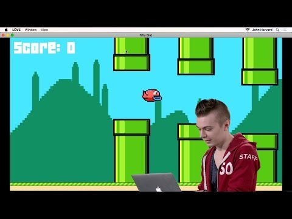
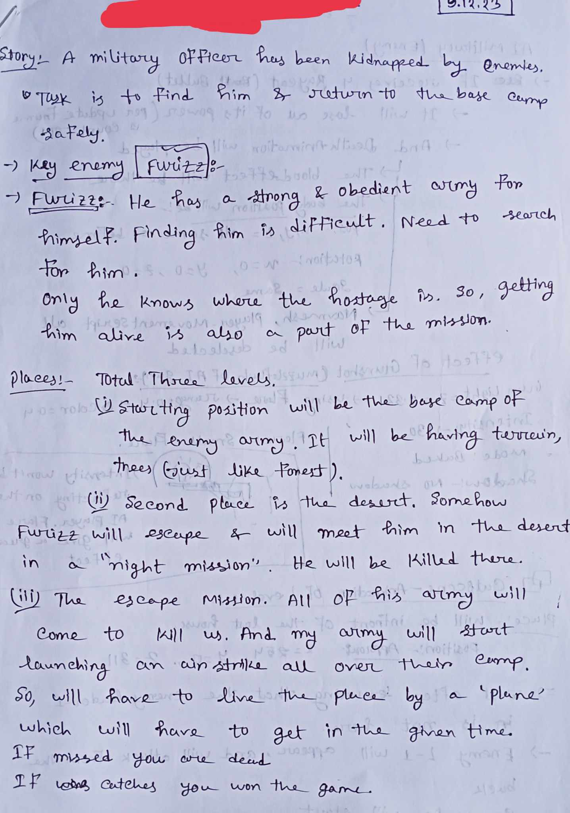
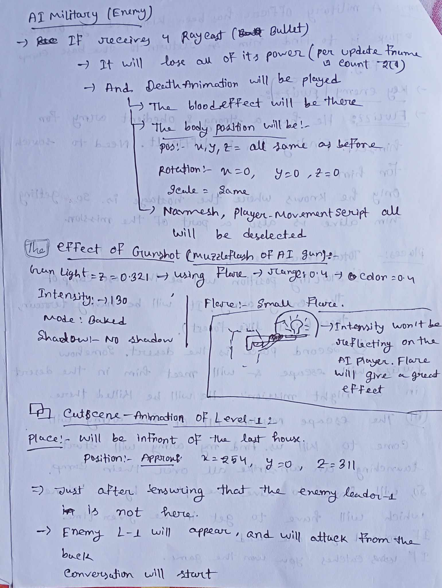
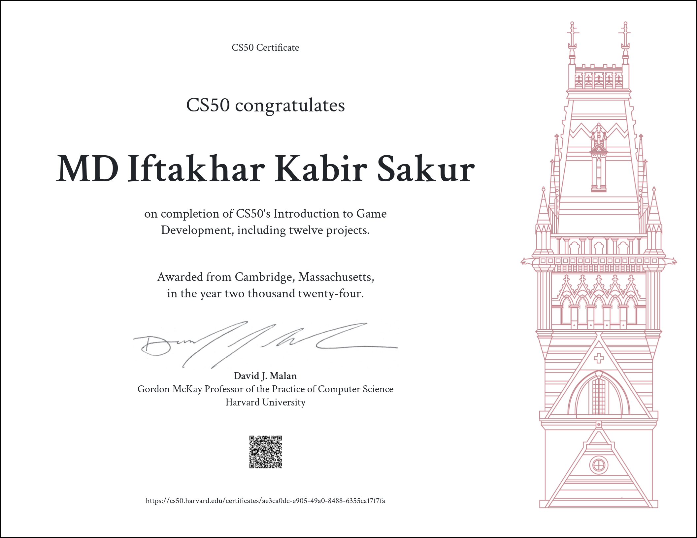

In May 2022, on an evening, I was sitting alone, feeling tense about my future. I was dedicated to learning programming and focused on competitive programming. However, due to some challenges, I lost my path and couldn’t quite recover from it. I started losing interest in competitive programming, but I kept up with learning various aspects of programming. Now, I’m going to share my journey from starting in game development to where I am today.
HOW IT ALL STARTED
A week later, I visited the CS50 page (I had previously completed the CS50x course). While scrolling, I came across a course called CS50G. I decided to take the course and give it my absolute best to truly learn something valuable. I made a six-month plan, starting from June 1st to December 31st, 2022.
And this time I was so serious that I printed all the notes that they provided in each lecture.And started to read them
Can't remember the exact date but I started to watch the first lecture of CS50G that lecture was very basic about LÖVE 2d and Game Development.And The Lecturer was Colton Ogden.
While watching his lectures, I didn’t feel bored for a single second—I just kept watching, captivated by what he was doing. I didn’t understand everything immediately, but I learned things I hadn’t known before. It was a completely new experience. Every line of code had meaning; it would make something happen on my screen. In that moment, I realized something important: putting unnecessary pressure on yourself doesn’t help, but when your mind understands what’s happening, you start to enjoy it. And as for learning? You’ll learn at least something, and sometimes, that’s enough. Isn’t it?
The Journey with CS50G
CS50G: CS50's Introduction to Game Development
In the first lecture, we covered the classic game “PONG.” After each lecture, you’re required to submit a project based on what you learned. After submission, you might have to wait up to 21 days to receive feedback, as the CS50G staff manually checks each project. If your project meets their criteria, you receive a “1/1” via email; if not, you get “0/1” and need to resubmit.
The most interesting part is that you’re required to create a video of your project, demonstrating that you’ve met all the specific criteria they provided.
There are many more lectures that I had received on the LOve2D framework:
1)Flappy Bird
2)Breakout
3)Match-3
4)Super Mario Bros.
5)Legend of Zelda
6)Angry Birds
7)Pokémon
All of this contributed significantly to my knowledge of game development. I learned about AABB box collision, adding music with looping, creating and using classes across different scripts, and handling frame updates.
The animation from texture generation was especially cool. Though much of this was hard-coded and time-consuming, it was essential for learning game development from scratch, as it provided a solid understanding of how things work under the hood.
Remember how I planned to finish this course in just 6 months? Well, I couldn’t meet that timeline. The course was quite advanced, so I had to supplement my learning with external resources. Additionally, academic responsibilities—attending university lectures, lab classes, writing reports, taking quizzes, class tests, midterms, and finals—added to the delay. But the most important thing is that I never gave up. I maintained consistency in learning various aspects related to game development.
Starting with Unity

Yeah, 28th of July 2023 this day I can never forget. It is always the best day for me cause that day I got to know a magical thing named "Unity",
I knew how happy I was.The lecture of the 8th week "Helicopter" was based on the Unity.
In that lecture, he demonstrated a basic code example featuring buildings (obstacles) generated procedurally.
In week 9, there was a lecture on a horror-type game called DreadHall. In this game, you are inside a maze, and the objective is to find a coin that resets the game when collected. The environment was dark, with a creepy sound looping in the background, enhancing the horror experience.
All these videos you have watched are actually all those project that I had to complete and submit after each lecture.
Participating in IIUC Tech Fest
While I was completing my *Dreadhall* project, an opportunity arose for me to showcase my talent as a game developer at my university's "IIUC Tech Fest 2023." I was fully prepared to participate in the "Mobile Apps and Games" segment. I registered all on my own to showcase my game. It was a great moment, but at the same time, it was challenging because I was a beginner in Unity, and creating a large project alone was tough.
However, I conceptualized a story based on my ideas and started working with the knowledge I had. I definitely relied on YouTube tutorials for guidance since I had zero knowledge of character animation and how to implement it. I had to skip that part because I was short on time, and if I spent too long on it, I might not have completed the project. In the end, I was able to finish it.
I even presented it to the judges. Unfortunately, I felt like they didn't take my project as seriously as they did the software or mobile app projects, which made me feel disheartened.
Nonetheless, I put a lot of effort into my work, and I remained optimistic. I respected myself and motivated myself because I was brave enough to show everyone what I could create using my programming knowledge. This experience was just the beginning.
No doubt, it was a new beginning for my game development journey.

.jpg)
.jpg)
.jpg)
A demo of that project is given below.As you can see the health of the player is dropping is due the fire that are doing it. And the fire is the strength of the enemy ai. and when your health will be zero you will die.
And this is how my IIUC Tech Fest Journey ended....
But sad thing is I could not continue updating the project cause I lost all my files While
trying to work with unity later. Due to a version mismatch issue.And I was too new to understand that and make a copy of the game before doing it.
And I lost that project forever.
Although I have a game designing ppt file still. Hope I will start working on that game again when I will gain more experience and knowledge
of game development.
Some example of my game design and development presentation File is given below:


CS50G Final Project
After participating in the Tech Fest, I resumed my CS50G course and submitted "The Dreadhall" project. I then began planning my final project, deciding to base it on a story.
After finishing the final term of my university on December 8, 2023, I officially started working on my final project. The name of the game was Captain-Zoro.
I will never forget the first line of code I wrote. However, before that, I spent days creating a spaceship. As a beginner, I used Unity's 3D objects. I dedicated nearly four months to this project. Since it was story-based, I had to build the environment, add animations for vehicles and characters, and write the necessary code.
While working on this project, I didn’t feel tired or bored; instead, I enjoyed the entire process and maintained continuity. When I wrote the last line of code, I was so excited that I can still recall that moment. Just imagine: your four months of hard work are about to pay off.
Some examples how I worked in this project
 
Watch the whole game here:
After submitting this as my final project they reviewed and accepted it. And i received a free certificate on Game Development Course.I received it in 3rd May,2024.
And with this my journey of almost 1.5+ years with cs50g came to an end.
It was long journey which I never planned. But it was that journey which helped me to learn the thing that I couldn't dreamt of.CS50 certificate
{kind=link}

Things I Did After CS50G
After completing CS50G, I worked on several projects and successfully completed them. I started working on a project named Ashphalt-vs-Aviation.
I began this project on July 16, 2024, and finished it on August 26, 2024. I could have completed it earlier, but due to the political unrest in the country and witnessing the suffering of people, I lost my excitement for the project. However, when we celebrated our victory on August 5 (36th July) and gained our second independence, I resumed work with renewed motivation. I’m proud to say that I executed it perfectly.
Although this game has some bugs, I will soon be working on fixing them.
i) I have worked on several projects since then.
ii) I started a junior programming course in Unity to enhance my skills.
iii) I have been watching various videos to deepen my knowledge of game development. Additionally, I am following a roadmap (found on the internet) to guide my learning. It will take time, but I believe it is helping me learn new things.
Watch the video of the Ashphalt-vs-Aviation project:
Joining BUET-CSE Fest GameJam
On October 12, I came across a Facebook post about a game jam and decided to join.
The next day, on October 13, the theme of the game jam was revealed: "Heroes Never Die."
Heroes Never Die
I started brainstorming the concept of the game, then outlined the game mechanics and how I would work on it within a short time frame.
I completed most of it, but I couldn't finish the audio work.
The results were published within two days, and unfortunately, I did not make it into the top 15 or get to attend the offline event.
Even though I didn't succeed, I learned something important about myself: I can finish any project within a given time.
While playing the game, I found some bugs that I am currently working on fixing. I'm also focusing on the audio and making new plans to add more features to the game, with the aim of releasing a full version.
Watch the pre-release version of the game...
Prototype Satellite Simulator
This project is a simulation related to space, and I created a prototype of a satellite. The idea to work on this type of project came to me suddenly, and I thought that starting with a prototype would be the best approach. I spent over 3.5 hours making the entire thing, and I’m proud to say that I was able to complete it.
Watch the video of that prototype...
- Used Unity3D game objects.
- Utilized some random free images from the internet and converted them into sprites.
- Implemented Rigidbody for physics and wrote C# scripts.
My Future Plan
1. Working on More Projects
I have several ideas for new projects based on my own concepts. I've already thought of their names and how I will develop them:
i) Loverly-Runner: A fully procedural generation type game.
ii) BullIn: A game related to bull fighting.
iii) MazIQ: A horror-type game set inside a maze, featuring procedural generation.
2. Searching for Internships or Jobs in Game Development Companies
I have already started searching for internships and jobs at various companies. I have full confidence in my abilities and believe that I will secure a position soon. My goal is to learn more about game development and understand how professional developers work in the industry. I hope to land an internship or job in a game development company soon.
"Life is too short, and it never comes back. Two years ago, when I started learning game development, I had no idea of all the things I know today. Two years from now, when I'll look back, I want to see an even more advanced version of myself. I want to leave as many footprints as I can before I leave this earth. So, I will keep learning and making games..." — An unknown indie game developer named Sakur← Back to Blog